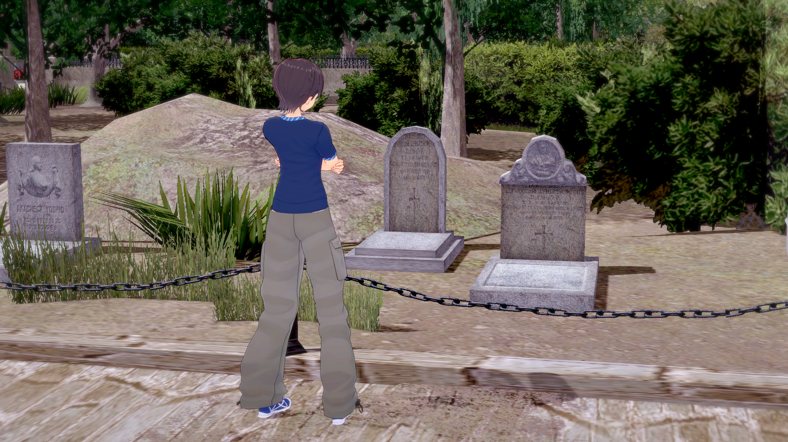
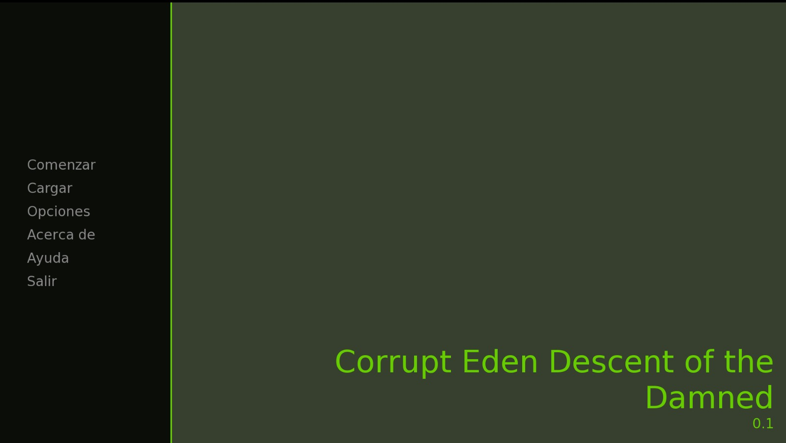

Notas de actualización
En esta sección iré publicando las novedades y cambios que trae cada nueva versión junto con imágenes representativas.
Versión 0.2
Se Agregaron mas escenas y mas historia.
Versión 0.1
Primer prototipo funcional con mecánicas básicas.
